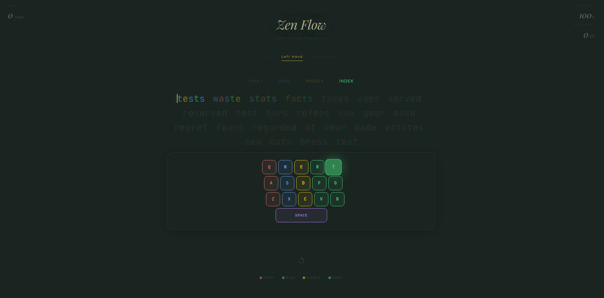
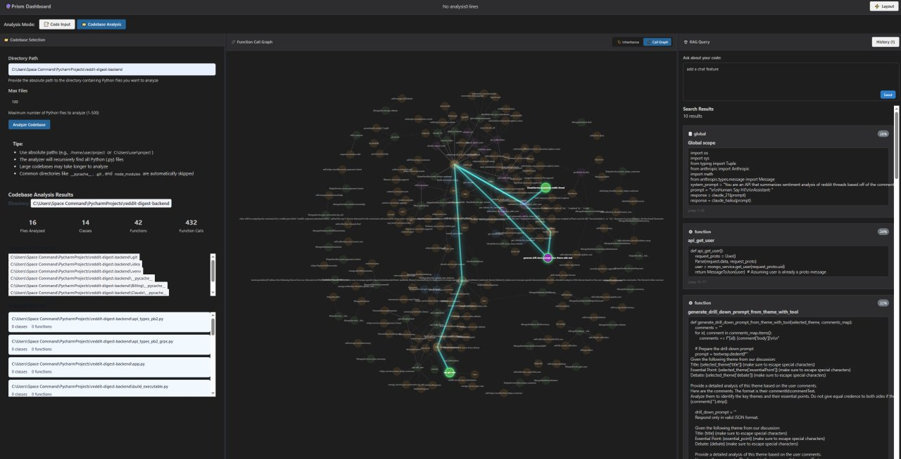
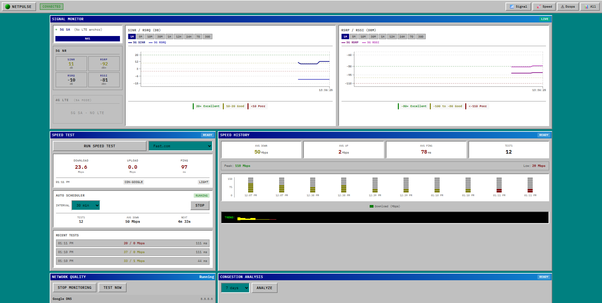
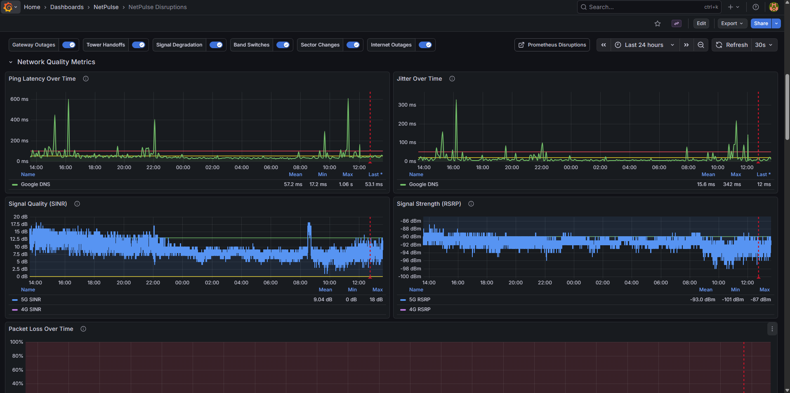
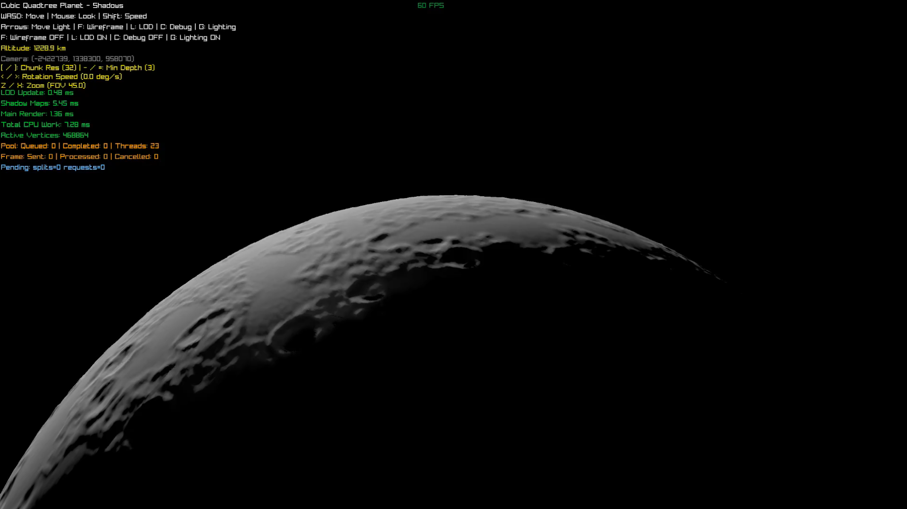
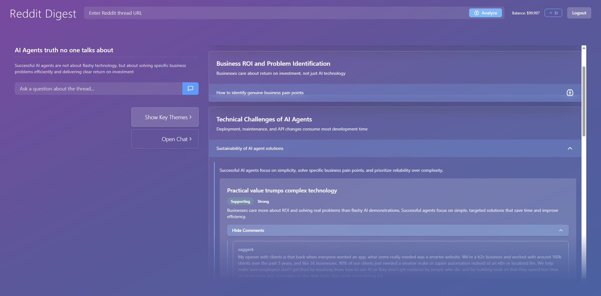

Founding Engineer
An opinionated agent framework built on three core concepts: harnesses yielding events, composable harnesses, and events forming a graph. Features streaming LLM calls across multiple providers, human-in-the-loop approval via relay events, sub-agent orchestration, a client-side immutable graph reducer for conversation rendering, and an RLM harness that gives models a REPL for processing arbitrarily long inputs.
A typing web app built in ~20 minutes on the N train using Claude Code for Web. Its main value proposition is allowing for targeted training of individual hands.

Build AST of codebase, create embeddings, use vector search as entry points into the AST and then pathfind between top N matches to find parts of the code within a certain blast radius. Used for providing codebase intelligence in a context-efficient manner to agents.

Used to monitor my home 5G connection (and served as an excuse to buy a Mac Mini). This let me put together a case that T-Mobile oversubscribed my area. I'll be putting together an FCC violation report using its collected data which will hopefully lead to better service for folks in my area.


Built in C with Raylib, renders an actual planet-sized rocky planet with detail from surface to orbit using a cubic quadtree to generate meshes and cascaded shadow maps. Since learning about shadow maps, I've been wondering if there is a way to translate this concept to a neural net layer — it deals with translating vectors!

User sentiment analysis of Reddit threads with thousands of comments. Extracts 5 main themes, supporting/opposing arguments, and cites individual comments for comprehensive thread understanding.
